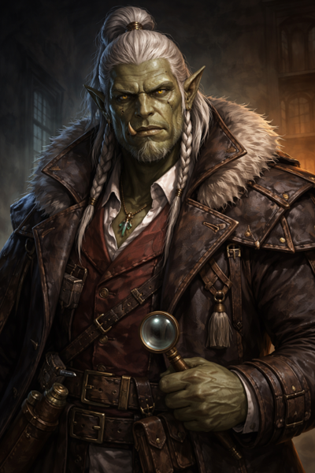

Da Baishan¶
"The mountain does not rush, does not shout, and does not move without cause."
Overview¶
| Player | Braedon |
|---|---|
| Ancestry | Orc |
| Class | Investigator |
| Background | Detective among the orc clans |

Description¶
Da Baishan (大白山, "Big White Mountain") is an orc investigator who grew up in the cavern networks where the orc clans of Chu Ye carved their homes into the bones of the earth. Unlike many of his kin, Baishan was educated deliberately—learning clan histories, ancestral customs, and the unwritten laws that kept blood feuds from becoming extinction events.
Among his people, strength is respected, but endurance is revered. Baishan learned early that the strongest orc is not the one who strikes first, but the one who understands why the strike is coming.
Personality¶
Baishan is scholarly and observant—somewhat surprising for his brutish appearance. He trusts patterns over proclamations and approaches problems methodically. When investigating, he doesn't ask who is guilty—he asks who benefited, who stayed silent, and who changed their habits afterward.
He does not threaten. He explains. And when the truth surfaces, as it always does, Baishan is already standing where it will break.
Why He Came to Willowshore¶
When the oni appeared—after generations of absence—and overthrew the old ruling order, Baishan did not celebrate. Power that arrives suddenly and claims inevitability always hides a cost. While others accepted the new hierarchy, Baishan watched. He listened. And when answers did not come, he left the caverns to investigate for himself.
The trail led him to Willowshore. He finds the oni's "I've always been here" posture deeply suspicious and seeks to uncover the truth behind their sudden return.
Relationships¶
Littlefinger¶
Baishan caught Littlefinger committing a crime against the oni—cleanly, unmistakably. The evidence was sound, the motive obvious. Rather than turn him in, Baishan recognized a shared suspicion. An alliance formed, not from trust, but from aligned doubt.
Ginkgo¶
By the river, Baishan witnessed something that unsettled him deeply: a spirit killing a mortal in full view of the living world. He and Ginkgo stood as witnesses. Ginkgo's leshy beliefs—that death fed life, that decay was not corruption but transformation—stood in stark opposition to Willowshore's funerary laws. Against local custom, Baishan agreed to hide the body in the forest and allow it to return to the cycle. It was a calculated risk. One he still weighs.
Donkey¶
At a tavern, Baishan crossed paths with Donkey, an ancient elf who spoke a truth so carefully framed that it led Baishan into public embarrassment. The statement was technically accurate—and deeply misleading. Baishan does not forget such things. Deception masked as wisdom is still deception. Yet he respects Donkey's knowledge and considers him a valuable, if unreliable, source of information.
Session History¶
Session Zero (2026-01-16)¶
- Character created
- Established backstory as orc detective from the caverns
- Formed alliance with Littlefinger after catching him stealing from oni
- Witnessed a spirit killing with Ginkgo; helped hide the body
- Had an encounter with Donkey that left him wary but respectful
Session One (2026-01-30)¶
- Ordered a polearm with pennant rings from Yong
- Guarded the warehouse exit during the rescue; prepared burn salve for the victims
- Opened formal investigation: "The Investigation of the Children's Fire"
- Determined the fire was arson (kerosene accelerant, unnatural spread)
- Deduced the children accidentally triggered sabotaged fireworks
- Negotiated payment from Magistrate Kurosawa (50 gold up front, 50 after)
- Attempted to read the magistrate's motives; detected only extreme confidence
- Resisted Radiant Willow's attempts to adorn his tusks with jewels
Session Two (2026-02-05)¶
- Used Clue In to help Donkey read Hong's evasions during the interrogation
- Led the questioning of Mido; earned her respect with honest disclosure of the party's dual loyalties
- Left Hong's satchel with the Yeshou family to be filled with gold
- Used crossbow and Devise a Stratagem in the graveyard combat; killed the undead cat with a precisely planned short sword strike (rolled a 19 on stratagem)
- Saw the river spirit during and after combat—the same body he and Ginkgo hid; it shielded him from the cat's attack
- Heard the spirit's message: "Something stolen, something broken"
- Spirit lore check (15) found no spirit realm connection to the Mourndusk Willow
Session Three (2026-02-12)¶
- Ventured into the Dark Woods to investigate the Mourndusk Willow
- Retrieved the clay bowl from the ritual pit between the tree's roots—held it through the entire combat, one-handed
- Examined the ceremonial dagger (Perception 25); identified Toanin inscriptions (Occultism 21): "Let ancient law be sealed in the hand that guides Willowshore"
- Used Imperial Lore (24) to confirm Toanin is a common oni dialect; "the hand that guides" references the magistrate
- Investigated the ritual (Occultism 24): identified it as a dark sacrificial substitution ritual—a summoning or communion, at least partially successful
- Assisted Ginkgo in crafting a salve bomb using his alchemist toolkit (Crafting 21)
- Abandoned his crossbow after every shot missed; switched to short sword and landed multiple hits on the bear while flanking with Boone
- Leapt over his allies to tackle and restrain an infected squirrel (Athletics success), then detonated the salve bomb to cure both squirrels
- Visited Hong in the evening; intimidated the boy (23) to confirm no further sabotage was planned
- Received his guandao from Yong, bearing a striking rune as a gift of gratitude
Session Four (2026-02-26)¶
- Helped rescue Hong from an old well; climbed down, tied the rope, and investigated the scene
- Discovered a dwarven skeleton and clan dagger (Kaizo clan, "endurance" rune) in the well's mud
- Used Odd Feet (investigator feat) to notice the body had been stripped of armor—placed deliberately, not a fall
- Opened a new investigation: "The Mystery of the Submerged Dwarf"
- Collected the bones and buried them properly at the graveyard
- Played wingman for Hong and Kimmy: "He needs a kiss to feel better"
- Scouted the ceremony route with Boone and Littlefinger; nothing suspicious found
- Infiltrated the Yeshou estate during the festival via the shed tunnel (Stealth 12, Athletics 16 to break the latch)
- Checked for traps on the first floor (Perception 26—none found)
- Met Littlefinger in the wine cellar; heard the fox alarm from upstairs; heard the front door open (magistrate entering)
- Radiant Willow has matchmaking plans for him with Peony Switchstep, a cheerful seamstress
- Reached Level 2
Session Five (2026-03-12)¶
- Whispered to Littlefinger to hide and search, then crept toward the estate's front door at half speed (Stealth 18, 19—one creaky floorboard and a knocked-over object along the way)
- Emerged outside and bluffed Magistrate Kurosawa at the front door: "I heard the alarm—I'm here to help" (Deception 12—not great, but Kurosawa's grip on his sword loosened)
- Helpfully pointed out the shed door was ajar, redirecting Kurosawa's attention to investigate there
- Dismissed by the magistrate; reconvened with the party outside the estate walls
- During martial law, helped lead the distraction team to confront Kurosawa directly, offering investigative services
- Kurosawa told him pointedly: "I believe our criminals are within my sight"—then said he would summon Da Baishan in the morning for investigative assistance
- Escorted back to Silver Mist Inn under guard
- Requested an alibi from Mido; the Yeshou family agreed to vouch for the party
- Level 2 upgrades: Skill increase in Thievery; Shared Stratagem (class feat—ally also treats target as off-guard when using Devise a Stratagem); Eyes of the City (skill feat—use local citizens to help track people in settlements)
- Peony Switchstep gave Willow visible resistance when she tried to arrange a meeting at the festival
Session Six (2026-03-19)¶
- Had the shared dream of the wounded land with the rest of the party
- Channeled Cassian Voss's spirit during a cemetery séance (Spirit Lore 18, Diplomacy check)—his body and voice taken over by the spirit while he could hear but not control himself; described the experience as "deeply unsettling"
- Voss's spirit revealed critical information through him: the old gods are closer than believed, the prophecy is a ritual for "the Unspeakable One," and five must be sacrificed
- Spirit lore (17) confirmed the old gods were banished to a pocket dimension, not destroyed; communing requires a medium with cross-planar reach—suggested the ancient willow tree in the Dark Woods
- Spirit lore (20) identified that communing with old gods generally requires a proxy medium; ley lines have cross-planar reach; five ley lines would be especially powerful
- Missed three consecutive crossbow shots during the werewolf combat; switched to his Guan Dao and landed a hit for 8 damage in melee while flanking
- Devise a Stratagem rolls were poor both rounds—low D20 results
Session Seven (2026-04-02)¶
- Missed three more crossbow shots against the wolves—one went to the river, one was "not even close," and one "fell off the crossbow"
- Entered the Gosembiki ruins first using That's Odd (investigator feat)—noticed two statues that looked relatively new compared to everything else in the ruin; pointed them out to the party before they animated
- That's Odd (second use) in the ritual chamber—noticed the broken alabaster dial had been recently reassembled; dust impressions showed where pieces had lain for ages before being moved
- Finally hit with the crossbow for the first time in the campaign—7 damage against the immobilized stone guardian: "The crossbow wasn't broken. It was building suspense."
- Killed the second stone guardian alongside Boone in the Predator handshake—plunging his Guan Dao through it while clasping hands with Boone across the crumbling stone
- Rolled a critical miss (natural 1) on a Guan Dao attack against the second guardian
- Devise a Stratagem continues to produce poor results—rolled a 1 on the D20, used Skill Stratagem instead for +1 circumstance bonus
- Became frightened 2 from the spectral guardian's howl (failed Will save); penalized on all checks for the encounter
- Missed the spectral guardian with his Guan Dao attack
- Took 15 cold damage from the spirit's death explosion (failed Reflex save)
- Discovered his Guan Dao has the reach trait—can attack from 10 feet, same as Boone's polearm
- Noted he needs to "get rid of that damn crossbow" (again)
Session Eight (2026-04-22)¶
- Pulled the device free from the gear cradle, triggering the collapse and the chasm; dropped to 0 HP (4 damage on 4 HP) from the falling ruin and entered dying condition—stabilized by Boone's Assurance (Medicine)
- Received his personal mark from Vujravati in the frozen moment of the collapse
- Took possession of Judgement's Edge, a magical longsword recovered from the rubble; once wielded by the legendary oni Shen Takashi: "Only criminals would be afraid of such a person."
- Felled the first demon in the street fight with a 13-damage longsword blow—its eyes blackened and it tumbled at his feet (after missing the first swing with the new weapon)
- Took 13 damage from a demon's claw—half his HP in one exchange
- During the trial: opened the party's defense with "You haven't asked where we've been, what we've been doing, or whose mission we've been on."
- Attempted to belittle the farmer's testimony; Kurosawa turned it around, accusing him of belittling the farmer himself
- Confiscated: Judgement's Edge, the Guan Dao, and the alabaster dial piece (via Boone) were taken by oni guards at the end of the session
Session Nine (2026-05-07)¶
- Already running at the open of session — took all three actions to dash west out of town, pulling away from Kurosawa's grasp on the way past
- Parkoured Kurosawa's earthen wall. Combat Climber + Terrain Expertise made the climb routine: Athletics 23 then 17 — to the top in two motions. Flipped off Kurosawa from the parapet
- Used the Guan Dao like a fireman's pole to pull Donkey and Ginkgo up over the wall (+2 assist, both made it)
- Avoided being grappled at the top of the wall by an oni who critically failed his climb (DC 9 vs. acrobatics 18)
- Stalled the parley with: "Your kangaroo court charges, Kurosawa, do not prove our guilt. But this battle serves no good." Argued for a fair trial with the recovered evidence; was rebuffed
- Smuggled a crowbar past the oni weapon-search (Thievery 16) — "You wouldn't want me to have that in confinement, so I'm gonna keep it"
- Used the crowbar on the back wall of the warehouse to pry old planks loose (Athletics 27 with crowbar +2 and assist +2) — opened the way for Littlefinger's exfiltration
- Hours later, the Perception roll that turned the night (19) — heard the floor-hatch lift open at the back of the warehouse and saw Kuji Yasho climb up out of the family's smuggling tunnel
- Made the Occultism check (21) on his Vujravati gift — at last understood it: a token tied to the Order of the Palatine Eye, an extinct legendary occult-investigator order with a known location ~40–50 miles south in the mountains. "There may be allies there, or something useful there for fighting Kurosawa if they know these lost dark arts."
- Explained the mark — and the cryptic phrase "When the town closes its hand against you, seek the eye that opens" — to the party; advocated heading south first to the Order before the Hollow. The party agreed
- Recovered Judgement's Edge, the guan dao, and the alabaster dial piece from Mido's stash; took one of the healing potions for the road
- Crossed the river south at moonrise; Littlefinger climbed onto his back when Vic dropped from the call. Reached Level 3
Session Ten (2026-05-14)¶
- Survival check on the trail south — picked up the bipedal tracks of what would turn out to be a Glutton Ogre; estimated stride length at 8–12 feet
- Hauled the bamboo tree down for the ham trebuchet at one shot — "I'll grab that tree" — hand over hand, bent it into an arch, latched it, and went on overwatch with Perception 22 on Seek action while the ogre repositioned. Spotted the rush early
- Climbed the switchbacks with the team to Cliché's fire. Did not get an explicit name from the hermit — "What's your name? You are standing… one small scan." Asked the hermit about "a giant friendly dragon who gives gifts" — Cliché answered with the "celestial one" line, confirming Vujravati by epithet
- Took a warm hand-stone from the fire and pocketed it — "Forge dwarf loves hot rocks"
- At the cliff, the only one who felt the magnetic pull of the door; his Vujravati gift had been homing on this point the whole way. Two raps on stone produced the deeper, metallic-toned answer; an eye drew itself in henna ink on the back of his hand as the door drew the matching eye in the cliff and opened
- Recall Knowledge (Intelligence) on the eye-mark — recalled, with a jolt, that Cassian Voss had carried the same mark on the back of his hand
- Inside the Hall of Divided Testimony, held the "That's Odd" clue from the dissonant lantern shadows the entire puzzle — "the shadows are wrong" was his standing read; eventually paired it with Donkey's verbal-component arcana hint to land on read the scrolls aloud as the unlock
- After the inner door opened, kept watch in the sanctum — the kneeling Stone Witness was standing at attention while Boone took the book
- Dropped his eye-tattoo voluntarily on exit — "I'll drop the tattoo. Let Donkey be the ink master here" — handing the Order's bearer-mark to Boone, who is now the named member
- Carrying the warm stone, walked out onto the cliff path knowing the next leg is west to the Hollow of Seven Cedars, per Cliché and per the Book
Session Eleven (2026-06-04)¶
- Came into the Palatine Detective archetype. The GM walked Braedon through the new investigator subclass at session open — still an investigator, now with the Order of the Palatine Eye archetype layered on, the ability to swap prepared spells, and the eye-mark on the back of his hand (see the Order's continuity note on who carries the eye)
- Debuted Divine Lance — a beam of divine energy fired from the eye on his palm. Missed the spiders and the web lurker every time, but the table loved it ("very Iron Man-ish"). Still cannot see through the eye — "not with that attitude, you can't"
- Carried the grove's investigation. "That's Odd" flagged the third cedar; Recall Knowledge read the scratched-out letters as Cassian Voss; quick magic-identification established a live ritual between the copper nails and the pond, dated the Voss carving to 6 months–1 year old (older than Kurosawa's nails), and caught a glint of magic in the base of the basin with his dark vision
- Touched the black pool when the eye-mark warmed and tugged his hand toward the water — and received the vision of Kurosawa grafting the corrupting root, the incantation "Memory is not sacred. It is only precedent. And precedent can be overturned," and the projected ruin of Willowshore's memory. Relayed all of it to the party
- Helped Ginkgo try to wrench the master graft loose (failed Athletics) before Boone finished the job; identified the Warden of the Grove (Occultism) as it erupted from the treeline
Session Twelve (2026-07-16)¶
- Struck the killing blow on the Warden — and did it as an investigator: Devise a Stratagem keyed to his standing investigation of the pool (17 on the die, Intelligence in place of Strength, 20 to hit, 11 damage), the blade going all the way through as the creature wilted on his guandao. Apologized to Ginkgo afterward that they couldn't subdue it
- The crossbow saga continued — two bolts, one into the empty basin, one "somewhere off into the deep woods." "One day I might learn." (Littlefinger: "Today is not that day, my friends.")
- Cast Shield mid-fight — a plain wooden orc-style shield floating out of the eye tattoo on his hand — and Shield Blocked a 17-damage claw down to 12 before it "splintered into a thousand shards"
- On the heist: outside man with Boone — hung the escape rope over the estate wall (reducing the exit climb to a trivial DC 8) and played boulder-parchment-shears on overwatch
- At camp, ran the session's decisive analysis: That's Odd plus his esoterica quick-identification on the stolen papers, the note, and the powder — concluding there are two seals from two hands: Kurosawa's orderly geomantic work sitting on top of a hastier, emotional erasure that even Kurosawa can't attribute. Verdict: "He's playing with things he doesn't fully understand" — and the note might make him "an unreliable narrator" rather than a liar
- Proposed the next investigative steps: consult the Grandmother, and "maybe go see Littlefinger's relatives as well"
Session Thirteen (2026-08-13)¶
- Played the skeptic on Mido's Rite of Open Reckoning plan — flagged that some of the stolen papers are ambiguous about how much of a hand Kurosawa truly had, and asked the sharper question: legal sufficiency aside, "do we have enough proof for the townspeople to understand and agree?"
- Completed Mido's dramatic reveal before she could: asked who signed Masru's commission to Willowshore — "Was it Kurosawa?" It was. Took the talk-to-Masru action item with Boone
- Reasoned out why Mido couldn't vouch for the town's memories — she wasn't in Willowshore for the "before times" — and confirmed with the GM that she shows no signs of the curse
- Received the Infiltrator's Elixir from Mido — "you have the eye of the order, and this will allow you to infiltrate secretly" — a drinkable disguise
- Pushed the party to long rest and assign every reversal step before starting — the session's quiet tactical win
- Arcana 24 on the stolen ritual (readable via his Order of the Palatine Eye training) — established that step five requires someone in the pool, and that it should be the original enterer (Ginkgo)
- Claimed step four, returning Cassian Voss's name to the third cedar: "I feel like I owe a debt to Cassian Voss, after what the Leshy made me do" — the Session Six séance, where Voss's spirit rode his body, still unsettles him
- Ran the step-one job interview: "Who has the best handwriting and knows what counterclockwise means?"
Session Fourteen (2026-08-20)¶
- Paid his debt to Cassian Voss — carved the name back into the third cedar in his best handwriting (dexterity-based crafting, 18: "nice script"), fought through the sand creature that rose from the erasure's powder to stop him, and finished the letters. His reward: Voss's voice, heard by him alone — "Tell the Order — it was not the oni." His response: "Now, if only I knew anyone else in this Order"
- Nearly died doing it. The sand creature singled him out: 9 damage in its leaf-shredding aura, then a 29-to-hit club-arm his Shield spell blocked — the acid in the sand dissolving the shield — for 13 more. "I'm not feeling so great." Post-game: "I almost died. But the rest of y'all did great"
- Solved the fight as an investigator: Devise a Stratagem (17 + Int = 20) on the "darker nexus" shifting inside the cloud, predicting its movement and striking true for 22 — the hit Boone credited with "the bulk of the damage" ("Dabaishan's Sherlock Holmes stratagem")
- Mid-session rules archaeology: discovered his On the Case feat — "I treat my adventures as mysteries" — meaning Devise a Stratagem is always justified by the current adventure. ("It's a good life philosophy" — Donkey)
- Occultism 27 on the seed cracked the multiplication problem — the transfusion through a living plant-being, its fatal cost, and the "tainted forever" fine print. (The GM's post-session retcon reframed the options — see Willowshore — but the transfusion remains on the table as the dark path)
- Probed for a Thieves' Guild to source a transfusion volunteer via his Streetwise feat — Willowshore, it turns out, no longer has organized crime to be streetwise about
- Coined the session's ethical shorthand watching Littlefinger reason through sacrificing "a rando leshy": "So now we know where Littlefinger lands on the trolley problem"
- Called the endgame play when Kurosawa demanded surrender: "I think we should invoke the... rite of open gathering. Open reckoning. I got there eventually" — with the sober caveats that surrendering twice is madness and killing the magistrate in a town that hates them is worse
- Back to full HP off Ginkgo's heal and his Robust Health feat ("I highly recommend it"). Level 4 at the start of chapter 15
Session Fifteen (2026-09-03)¶
- Diplomacy 31 turned the standoff. His pitch to Kurosawa — "We will all be held accountable at the end of this affair. You have my word on that. All I'm asking is: let's not get in each other's way" — cracked the magistrate's "the law is the law" posture and set the terms of the civil surrender. His legal follow-up was pure Baishan: "That was a different party of adventurers that looked exactly like us"
- Read Atsura like a case file: spotted her arcane tattoos (Perception 19) and identified them as abjuration, warding, and scrying — protective and investigative, nothing offensive. His one-word summary: "Fellow investigator"
- Cross-examined the investigator. Put her allegiance on the record before answering anything ("do you share Kurosawa's views... or are you here for the betterment of Willowshore?") and handed her the case's cleanest syllogism: nobody in this cage can work geomancy — "the only person in this town who has that kind of arcane knowledge and ability is not in a cage"
- Quietly confirmed the party's ace: the deputization from Masru still stands, and under the old law it's exactly the municipal authority needed to call a second Reckoning — "sorry, I was being circumspect"
- Ran the day's logistics: Willowshore Lore 29 surfaced Old Amber and the tribute customs; a fate-coin-flip Arcana/Occultism 29 found the deepest-sleep road to the spirit world; paid Luda's seven-gold grudge-debt from his last fifteen; kept a literal hand on Littlefinger's shoulder through the herb purchase (it saved 6 of 9 gold — briefly)
- Stayed in the waking world as the anchor — holding the third dose in reserve, armed, running the Message-relay test with Ginkgo while Donkey and Littlefinger crossed over. His relief at the session's cliffhanger was immediate and sincere: "I'm so glad I stayed in the real world"
- Level 4 pick: Sow Rumor — earmarked for the Kurosawa endgame: "I can start to sow rumors about him throughout the town"
- (Also ran Donkey all session in David's absence — including the entire dream sequence)
Session Sixteen (2026-09-17)¶
- Went under after all. When Boone offered the third dose, volunteered instantly — "I'm willing to" — and ran a full round through the dream-dark toward the lantern-light with his crossbow already in hand
- Solved the fight as an investigator before firing a shot: Devise a Stratagem (12) → Skill Stratagem → Perception on why nobody was attacking the monster — and the GM handed him the fight's rule: each cut tether frees Old Amber and loosens the warden's leash equally. Chose to stay at range and shoot threads
- THE CROSSBOW HIT. Twice. Bolt one (23, 8 damage) severed the second tether and put out a lantern; bolt two — "it's not a roll, he's impressing" — took the fourth. "You've got one, I've got one. We're even. I don't want to hear anything about my crossbow anymore." (Divine Lance missed at 13; the third bolt, a 14, hit the moth for 8 instead of the last thread — "even when I miss, Littlefinger's still effective. Kind of")
- Failed the shriek save: 11 mental damage and stupefied 2. Then, with feeling, as Gary juggled the moth's stunned/blinded/dazzled conditions: "I love this. Gary's getting a taste of what he does to us"
- Negotiated with the river spirit: told Old Amber about the half plum and the plan, asked for its help to save the whole town — and got the "Can I consume the plum?" that ended the curse. Asked the sharp follow-up on the second curse: "We don't even know where to start"
- Woke to cucumber water in the face: "Hey, Boone, I think we'll need more than cucumber water. That was not a very pleasant dream." Remembered mid-triage that he's trained in Medicine and owns a healer's kit
- Took the trial script off the mayor by asking — Diplomacy (Request) 19, labeled "Attack: Request" by his sheet — after first proposing "Littlefinger, you should steal the shit out of that." Masru handed over Kurosawa's handwritten verdict instructions
- Debuted Sow Rumor: anyone who speaks against Kurosawa will be rewarded handsomely by the Magi for enforcing justice. GM's secret Deception vs. secret DC; results in a few hours. (Braedon, on the feat: "Powers, man, I like that")
- Named the risk in Atsura's offer: "Without Kurosawa, undoing the first great Reckoning gets harder if your verdict were to go that way" — and bought the party time to think
- Chugged a stranger's cider at the Silver Mist Inn (handed over by Littlefinger, two-fingered)
- Found Cheng with Eyes of the City + Leveraging Connections — north side, watching decorations go up — and bribed him back to the inn with treats (Request 11: "Okay"). Endured Cheng walking behind him the whole way, copying his gait: "This guy's starting to creep me out a little bit"
- Post-session verdict on the Smiling One: "I was coming into this like, hey, he's probably not the cause of all this — he's probably just affected by it. And then Vic started grilling him, and now I'm changing my tune"